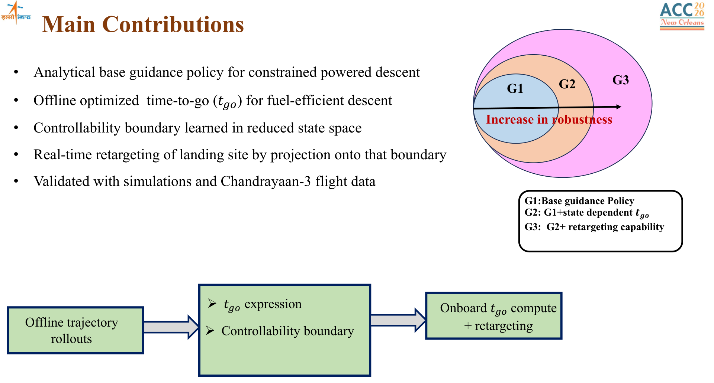
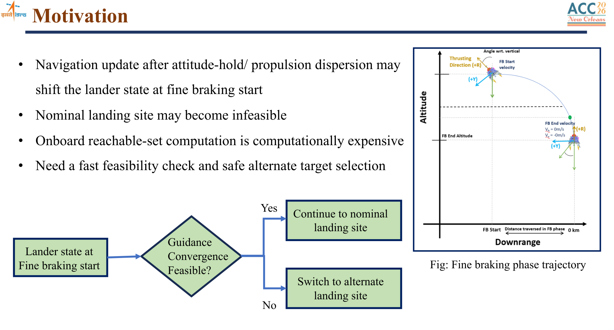
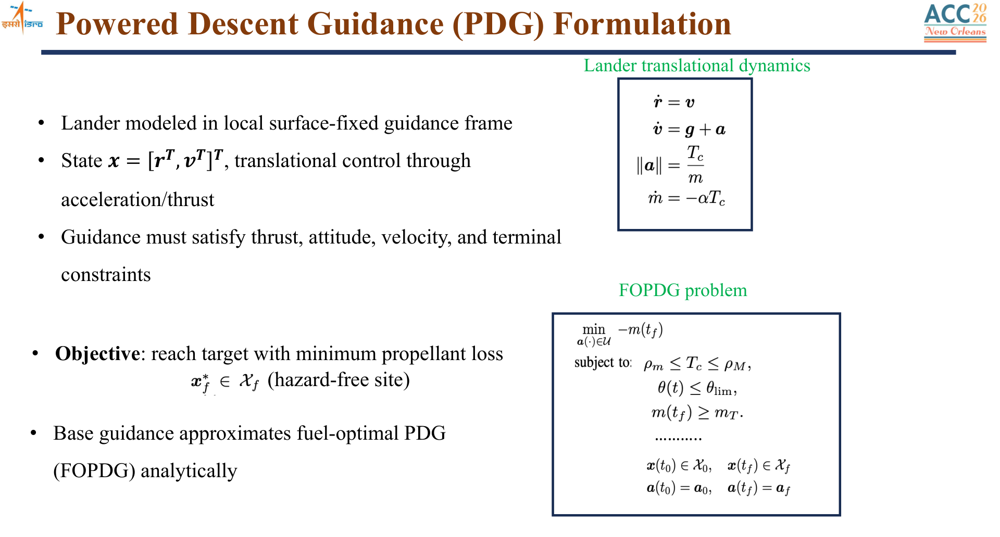
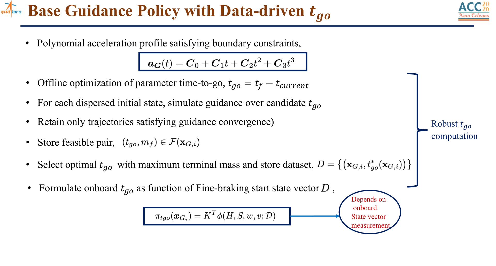
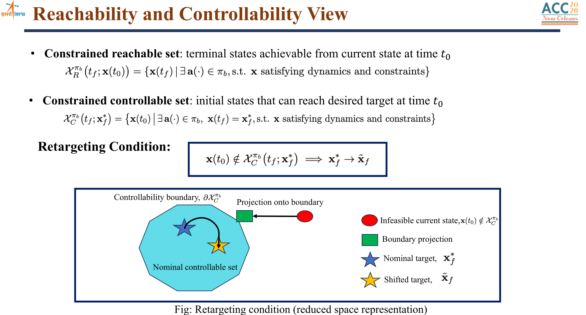
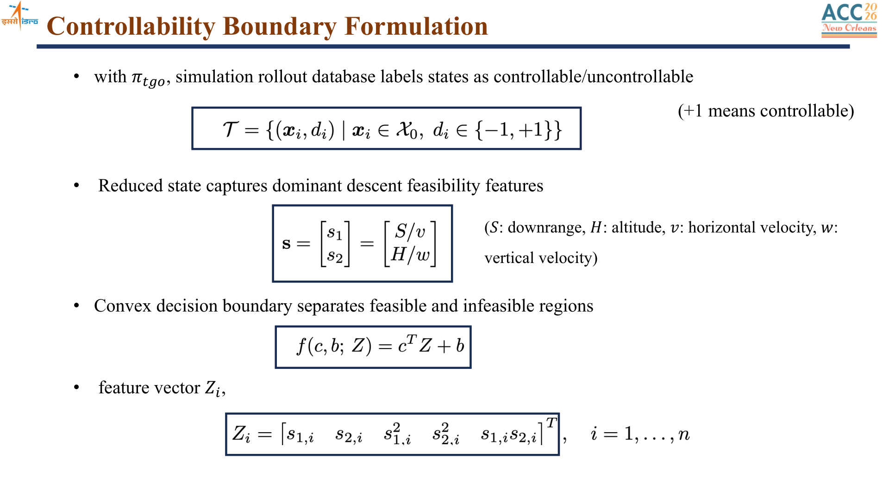
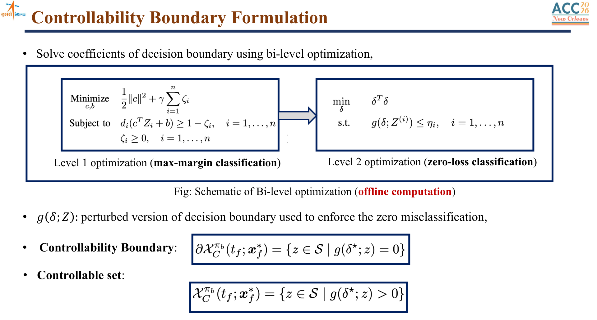
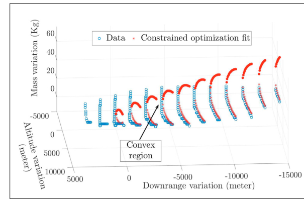
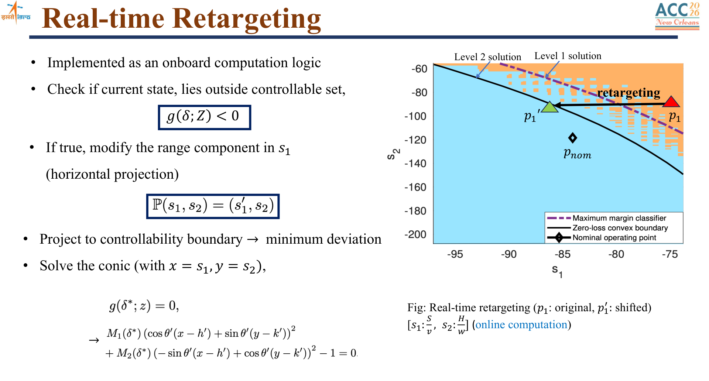
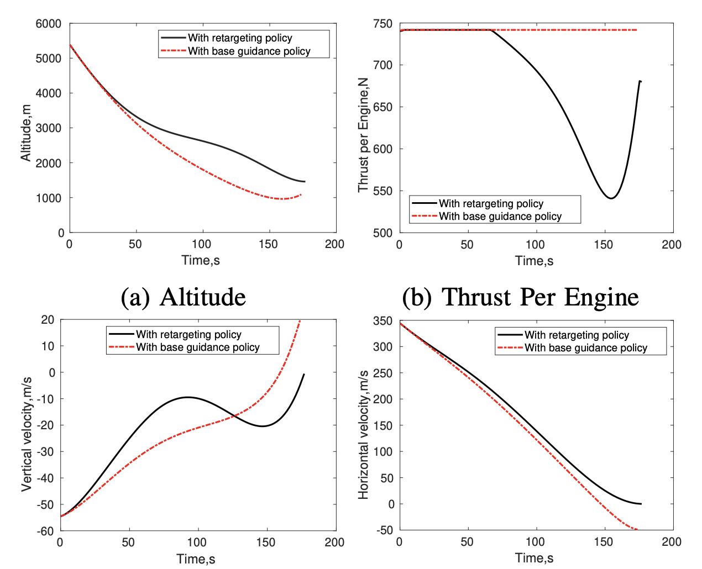

U R Rao Satellite Centre, ISRO · August 2019–July 2024
Spacecraft Autonomy & Guidance, Navigation and Control (GNC)
Five years as a GNC scientist working across more than ten space missions, from lunar powered descent and human-spaceflight systems to solar-observation and Earth-observation spacecraft.
My work covered flight-algorithm development, nonlinear spacecraft dynamics, control design, Monte Carlo analysis, onboard decision logic, high-fidelity simulation, and stability assessment. Chandrayaan-3 was a major focus: I contributed to the GNC analysis behind its autonomous powered descent and co-authored technical work on guidance feasibility, real-time retargeting, landing strategy, and propellant-slosh interaction.

Chandrayaan-3 Moon Landing
Chandrayaan-3 demonstrated autonomous safe and soft landing near the lunar south-polar region on 23 August 2023. The U R Rao Satellite Centre team designed, analyzed, implemented, and realized the powered-descent GNC system that brought the lander from orbital velocity to touchdown.


The descent was deliberately staged: rough braking removed most of the approximately 1.68 km/s horizontal velocity, attitude hold prepared the sensor and propulsion geometry, fine braking drove the state toward the terminal corridor, and terminal descent completed hazard-aware vertical landing. Each phase balanced thrust and attitude limits, navigation accuracy, guidance convergence, failure tolerance, and propellant use.

Why the landing problem was hard
The lander had to autonomously absorb navigation error, thrust dispersion, mass uncertainty, actuator constraints, and late absolute-navigation updates. Under a sufficiently large state shift, the nominal target could become unreachable even though a safe landing remained possible at a nearby site.
That motivated a lightweight onboard answer to two questions: Is pinpoint landing still feasible? If not, what nearby target remains controllable? The resulting framework combined offline high-fidelity simulation with analytical onboard evaluation and target retargeting.

From Powered-Descent GNC to Real-Time Retargeting
During fine braking, navigation estimates the lander’s position, velocity, and mass; guidance converts that state into a commanded acceleration and thrust direction; and the inner attitude and propulsion loops execute the command. The trajectory must reach a tightly specified terminal state while respecting thrust, attitude, velocity, glide-slope, and no-sub-target-travel constraints.
The technical sequence below follows the actual design flow: define the constrained descent problem, construct a robust base policy and time-to-go, identify the controllable set, fit a conservative boundary offline, and project an infeasible nominal target back to that boundary onboard.

Why a feasibility and retargeting layer is needed
A late navigation update or propulsion dispersion can shift the state at fine-braking initiation. The nominal site may then become infeasible even though nearby landing states remain reachable. Computing the reachable set or resolving the full constrained trajectory onboard is too expensive, motivating a compact feasibility test and alternate-target rule.

Constrained powered-descent formulation
The lander is modeled in a local surface-fixed frame. Guidance chooses the thrust acceleration while satisfying translational dynamics, mass depletion, thrust limits, attitude constraints, terminal position and velocity, glide-slope, and no-sub-target-travel requirements.

Base guidance policy and robust time-to-go
The base policy uses a cubic acceleration history whose coefficients satisfy the initial and terminal boundary conditions. Candidate times-to-go are evaluated offline over dispersed states; the resulting map supplies a robust value onboard while preserving an explicit, inspectable guidance law.

From reachability to a controllability boundary
The controllable set contains the initial states from which the base policy can satisfy the dynamics, constraints, and desired terminal state. Retargeting changes the desired landing state so that the current navigation estimate lies within that set.

A lightweight onboard feasibility test
My 2018 ISRO internship on convex optimization provided the methodological starting point. For the later landing study, high-fidelity rollouts labeled dispersed states as controllable or uncontrollable. Downrange and altitude were normalized by horizontal and vertical velocity, then lifted into a quadratic feature map so that onboard evaluation required only a small set of stored coefficients and a sign check.

A constrained two-level fit first finds a maximum-margin classifier, then moves the boundary until no uncontrollable sample is classified as safe. The resulting zero-loss boundary is intentionally conservative: it sacrifices some reachable states to protect the onboard decision.


Real-time retargeting by boundary projection
If the nominal point lies outside the controllable set, the onboard logic changes only the range component and projects the target to the nearest point on the fitted boundary. This produces the smallest landing-site shift while retaining the analytical base guidance policy and avoiding online trajectory optimization.

The design was evaluated through dispersed-state rollouts, high-fidelity six-degree-of-freedom simulation, Monte Carlo campaigns, and comparison with flight telemetry. The flight trace remained within the preflight Monte Carlo performance envelope for the fine-braking phase.



Propellant Slosh Modeling and Control Stability
Powered descent couples rigid-body motion, liquid-engine forces, reaction-control thrusters, sensor feedback, and motion of partially filled propellant tanks. I co-authored work that represented the dominant liquid modes with time-varying equivalent pendulums inside a nonlinear three-axis, multi-tank spacecraft model. The model converts pendulum motion into disturbance force and torque acting on the lander.


Stability across a time-varying descent
Because propellant mass, pendulum frequency, damping, center of gravity, and inertia evolve during descent, stability was assessed through short-period frozen-time models rather than a single fixed plant. Center-of-percussion, rate-sensitivity, frequency-domain, and time-domain studies identified where control/slosh interaction was most critical.
The Chandrayaan-3 study then incorporated the nonlinear pulse-width/pulse-frequency modulator used to command on-off RCS thrusters. Describing-function and extended Nyquist analysis separated stable operation, bounded limit cycles, and unstable encirclements at the slosh frequency—an analysis that a purely linear loop model would miss.


Broader Mission Portfolio
Beyond Chandrayaan-3, my five years at ISRO included GNC, attitude-control, dynamics, simulation, and mission-analysis contributions across more than ten programs. Representative missions include Aditya-L1, India’s solar-observation mission; Gaganyaan, India’s human-spaceflight program; and INS-2B, an Earth-observation nanosatellite where I served in an AOCS project-management role.
Chandrayaan-3
Powered-descent GNC, feasibility and retargeting, simulation, and slosh/control analysis.
INS-2B Nanosatellite
Attitude and orbit-control project-management responsibilities for the Earth-observation nanosatellite.
Technical Reports and Publications
- Debajyoti Chakrabarti. Applications of Convex Optimization, ISRO internship report, 2018. [report]
- Debajyoti Chakrabarti, Suraj Kumar, Aditya Rallapalli, M. P. Rijesh, and G. V. P. Bharat Kumar. “Convex Decision Boundary Design for Guidance Feasibility Check During Powered Descent Phase of Chandrayaan-3 Lander,” IFAC-PapersOnLine, 2024. [paper]
- Suraj Kumar, Debajyoti Chakrabarti, Aditya Rallapalli, and G. V. P. Bharat Kumar. “Real-Time Retargeting-Based Robust Polynomial Guidance for Chandrayaan-3 Lunar Landing Mission,” Journal of Guidance, Control, and Dynamics, 2026. [paper]
- Suraj Kumar, Debajyoti Chakrabarti, Aditya Rallapalli, G. V. P. Bharat Kumar, and Ashok Kumar Kakula. “Real-Time Retargeting Using Controllability Boundary for Chandrayaan-3 Lunar Landing,” American Control Conference, 2026. [paper]
- Aditya Rallapalli, Suraj Kumar, G. V. P. Bharat Kumar, Chiranjib Guha Majumder, Debajyoti Chakrabarti, and M. P. Rijesh. “Landing Profile and Powered Descent Strategy for Chandrayaan-3,” 2024. [paper]
- Nivriti Priyadarshini, Debajyoti Chakrabarti, and Yajur Kumar. “Modelling of Propellant Slosh Dynamics and Its Application in Control Stability Study of Lunar Landing Mission,” AAS 22-651, 2022. [paper]
- Aditya Rallapalli, Debajyoti Chakrabarti, Nivriti Priyadarshini, M. P. Rijesh, and G. V. P. Bharat Kumar. “Stability Analysis Using Describing Function for Non-Linear Attitude Control Loop with Slosh Dynamics of Chandrayaan-3 Landing Mission,” Indian Control Conference, 2024. [paper]